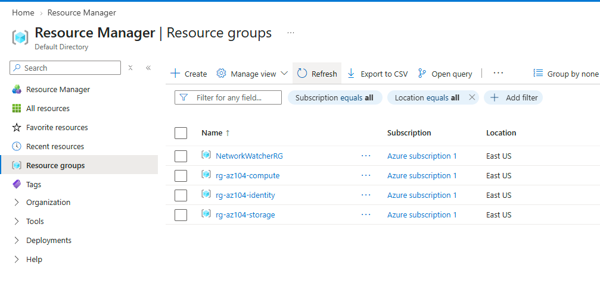
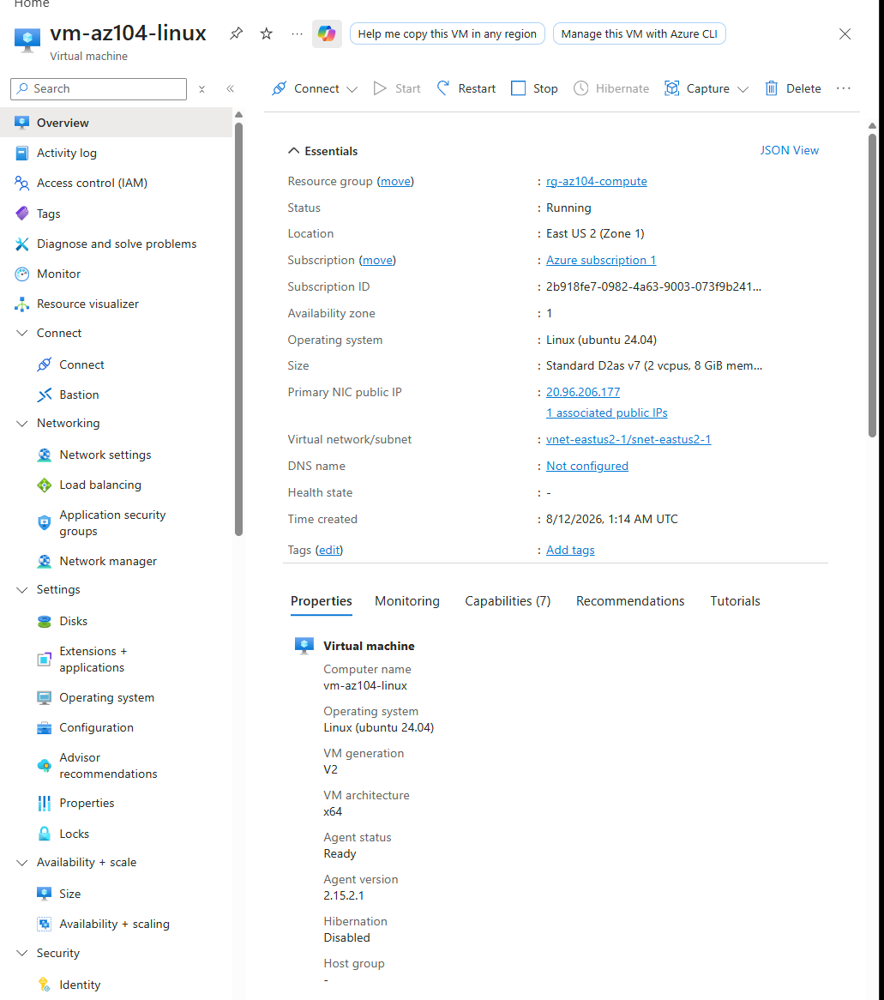
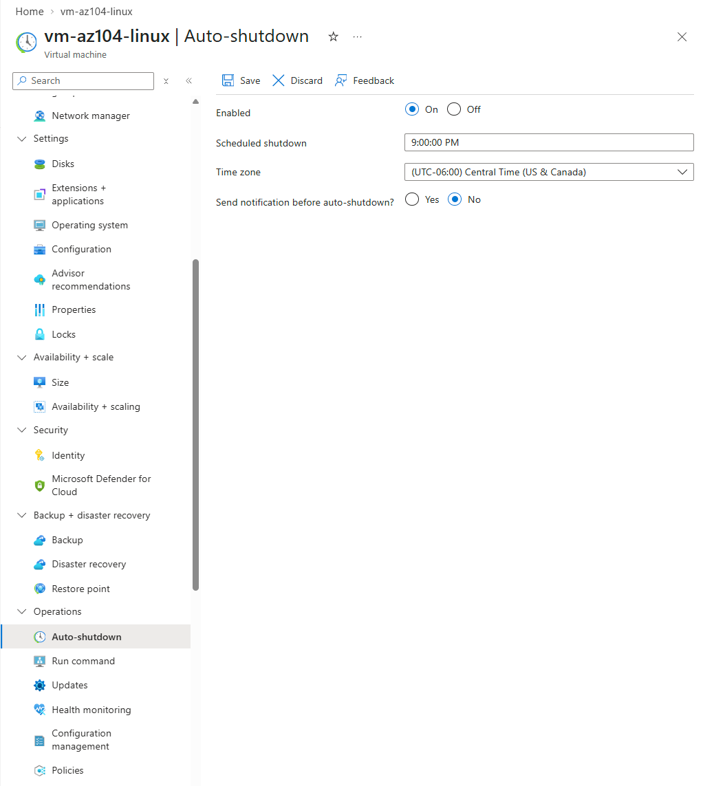
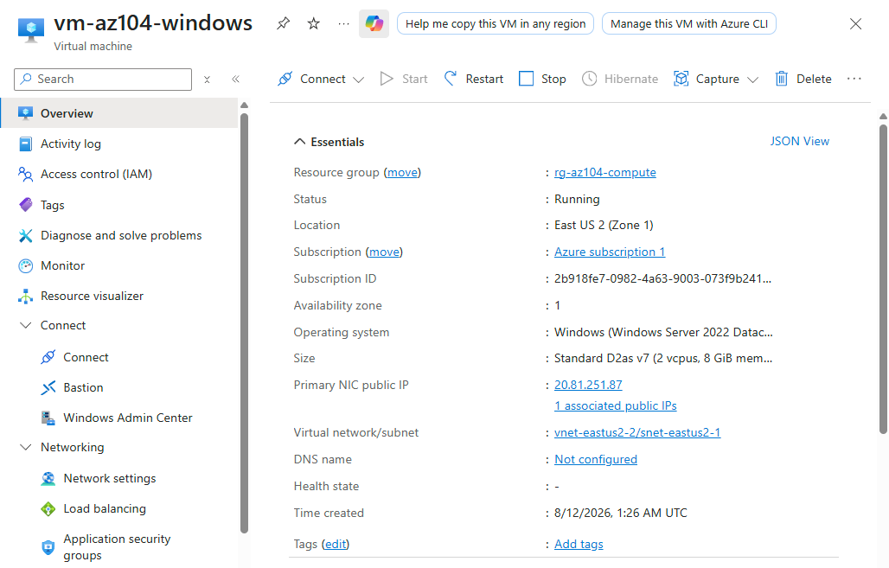
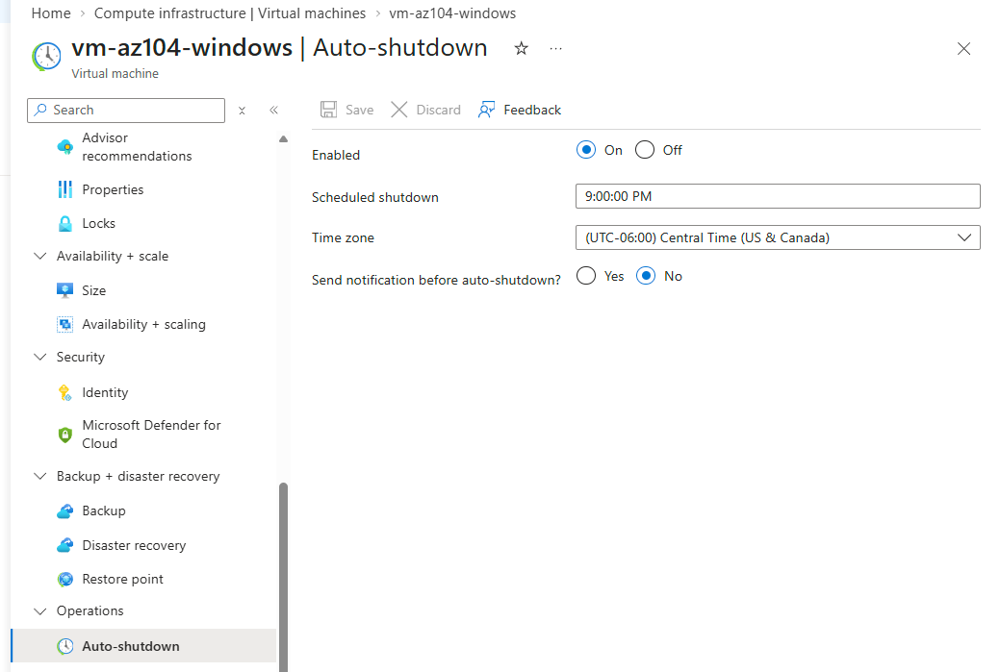
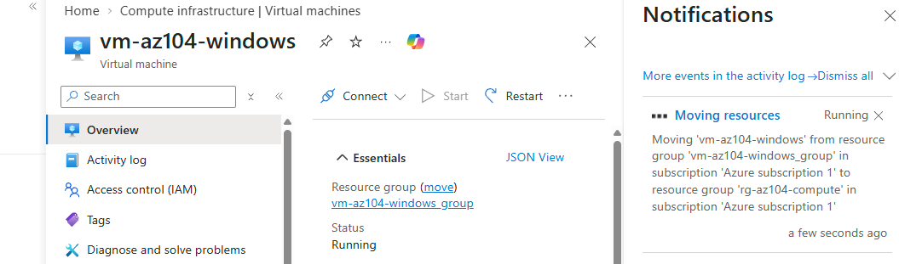

The first lab in the Compute domain. Deployed a Linux and a Windows VM into a shared resource group, hit a real subscription-level regional quota restriction along the way, and configured auto-shutdown on both immediately rather than as an afterthought.
The original plan was Standard_B1s, a Burstable-tier size that stays inside Azure's free 750-hour monthly allowance and matches a lab VM's idle-most-of-the-time usage pattern well. When the entire B-series family returned NotAvailableForSubscription in East US, D2as_v7 became the practical choice: a genuinely available, still-small 2 vCPU general purpose size, at a real but low cost of roughly $0.09/hour rather than free. The tradeoff was accepting a small real cost in exchange for something that actually deploys, rather than continuing to hunt for a free-tier size that may not have existed for this subscription in this region at all.
Once both a Burstable size and a D-series size returned the identical NotAvailableForSubscription error in East US, that pattern pointed to a regional restriction on the subscription itself rather than a size-specific quota problem. Switching regions tests that theory directly and, if correct, resolves every size issue at once instead of continuing to negotiate one size at a time against a restriction that isn't going to lift by picking a different SKU.
Every VM in this lab bills by the hour the moment it exists, unlike almost everything built in the Identities, Governance, and Storage domains. Setting auto-shutdown as the very next action after deployment, rather than something to remember later, turns a habit into a default. The $180 budget alert from the Identities domain is still the backstop, but auto-shutdown is the thing that actually prevents needing that backstop to fire in the first place.
Deployed two VMs and worked through a real regional capacity issue along the way.






"If you can build it again tomorrow without looking at yesterday's code, you've learned it. If you need to copy and paste it again, you've only completed a tutorial."
I am learning Infrastructure as Code deliberately, specifically Terraform and Bicep, rather than treating them as copy-paste snippets. The code below reflects actual understanding of each resource, not just reproduced boilerplate.
VM deployment in Bicep requires more explicit wiring than Terraform, since the VM, NIC, public IP, and OS disk are all separate resource declarations that reference each other by id.